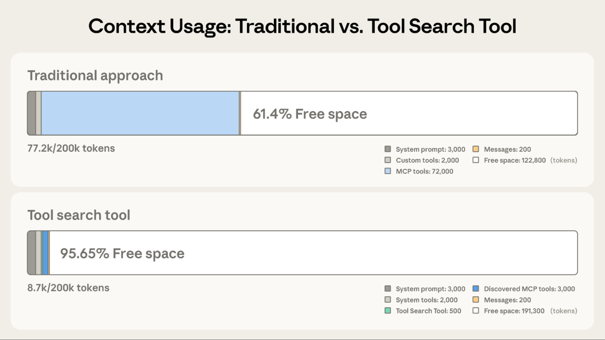

原文：Introducing advanced tool use on the Claude Developer Platform 来源：Anthropic Engineering | 2025-11-24 作者：Bin Wu 等
· · ·
AI agent 的未来是模型能无缝使用成百上千个工具。一个 IDE 助手集成 git 操作、文件管理、包管理器、测试框架和部署流水线；一个运维协调器连接 Slack、GitHub、Google Drive、Jira、公司数据库和几十个 MCP server。
要构建有效的 agent，它们需要能使用无限的工具库，而不是把所有工具定义一股脑塞进上下文。之前关于用 MCP 实现代码执行的文章讨论过，工具结果和定义有时会在 agent 读取请求之前就消耗 50,000+ token。Agent 应该按需发现和加载工具，只保留与当前任务相关的内容。
Agent 还需要能从代码中调用工具。用自然语言做 tool calling 时，每次调用都需要一次完整的推理，中间结果不管有没有用都会堆积在上下文里。代码天然适合编排逻辑——循环、条件、数据转换。Agent 需要根据任务灵活选择代码执行还是推理。
Agent 还需要从示例中学习正确的工具用法，而不仅仅依赖 schema 定义。JSON schema 定义了结构上什么是合法的，但无法表达使用模式：什么时候该包含可选参数、哪些组合有意义、你的 API 期望什么约定。
今天发布三个功能：
在内部测试中，这些功能帮助我们构建了传统 tool use 模式无法实现的东西。例如 Claude for Excel 使用 Programmatic Tool Calling 来读写数千行的电子表格，而不会让模型的上下文窗口过载。
· · ·
MCP 工具定义提供了重要上下文，但随着更多 server 连接，token 会迅速累积。考虑一个五 server 的配置：
这是 58 个工具，在对话开始前就消耗了约 55K token。再加上 Jira（单独就用 ~17K token），很快就逼近 100K+ token 的开销。在 Anthropic 内部，我们见过优化前工具定义消耗 134K token 的情况。
但 token 成本不是唯一问题。最常见的失败是选错工具和参数错误，尤其是工具名称相似时，比如 notification-send-user vs. notification-send-channel。
Tool Search Tool 不预先加载所有工具定义，而是按需发现工具。Claude 只看到当前任务实际需要的工具。

Tool Search Tool 保留了 191,300 token 的上下文，而传统方式只保留 122,800 token。
传统方式：
使用 Tool Search Tool：
这代表 85% 的 token 使用量减少，同时保持对完整工具库的访问。内部测试显示，在大型工具库上 MCP 评估的准确率显著提升：Opus 4 从 49% 提升到 74%，Opus 4.5 从 79.5% 提升到 88.1%。
Tool Search Tool 让 Claude 动态发现工具，而不是预先加载所有定义。你把所有工具定义提供给 API，但用 defer_loading: true 标记工具，使其可按需发现。延迟加载的工具不会初始加载到 Claude 的上下文中。Claude 只看到 Tool Search Tool 本身加上任何 defer_loading: false 的工具（你最关键、最常用的工具）。
当 Claude 需要特定能力时，它搜索相关工具。Tool Search Tool 返回匹配工具的引用，这些引用会被展开为完整定义加入 Claude 的上下文。
例如，如果 Claude 需要与 GitHub 交互，它搜索 "github"，只有 github.createPullRequest 和 github.listIssues 被加载——而不是你来自 Slack、Jira 和 Google Drive 的其他 50+ 工具。
这样 Claude 可以访问完整工具库，同时只为实际需要的工具付出 token 成本。
Prompt caching 说明：Tool Search Tool 不会破坏 prompt caching，因为延迟加载的工具完全排除在初始 prompt 之外。它们只在 Claude 搜索后才加入上下文，所以你的 system prompt 和核心工具定义仍然可缓存。
实现方式：
{ "tools": [ // 包含一个 tool search tool（regex、BM25 或自定义） {"type": "tool_search_tool_regex_20251119", "name": "tool_search_tool_regex"}, // 标记工具为按需发现 { "name": "github.createPullRequest", "description": "Create a pull request", "input_schema": {...}, "defer_loading": true } // ... 数百个更多的延迟加载工具 ] }
对于 MCP server，可以延迟加载整个 server，同时保持特定高频工具加载：
{ "type": "mcp_toolset", "mcp_server_name": "google-drive", "default_config": {"defer_loading": true}, "configs": { "search_files": {"defer_loading": false} // 保持最常用工具加载 } }
Claude Developer Platform 开箱提供基于 regex 和 BM25 的搜索工具，你也可以用 embedding 或其他策略实现自定义搜索工具。
Tool Search Tool 在工具调用前增加了一个搜索步骤，所以当上下文节省和准确率提升超过额外延迟时，ROI 最高。
适合使用：
收益较小：
· · ·
传统 tool calling 在工作流变复杂时产生两个根本问题：
Programmatic Tool Calling（PTC）让 Claude 通过代码而非逐个 API 往返来编排工具。Claude 不再逐个请求工具并将每个结果返回到上下文，而是写代码调用多个工具、处理输出、控制什么信息实际进入上下文窗口。
Claude 擅长写代码，让它用 Python 表达编排逻辑而非通过自然语言工具调用，你能得到更可靠、精确的控制流。循环、条件、数据转换和错误处理在代码中都是显式的，而非隐含在 Claude 的推理中。
考虑一个常见业务任务："哪些团队成员超出了 Q3 差旅预算？"
有三个工具可用：
get_team_members(department) — 返回团队成员列表（含 ID 和级别）get_expenses(user_id, quarter) — 返回用户的费用明细get_budget_by_level(level) — 返回员工级别的预算限额传统方式：
使用 Programmatic Tool Calling：
Claude 不再让每个工具结果返回自身，而是写一个 Python 脚本编排整个工作流。脚本在 Code Execution 工具（沙箱环境）中运行，需要工具结果时暂停。你通过 API 返回工具结果，它们被脚本处理而非被模型消费。脚本继续执行，Claude 只看到最终输出。
Programmatic Tool Calling 让 Claude 通过代码而非逐个 API 往返来编排工具，支持并行工具执行。
Claude 的编排代码示例：
team = await get_team_members("engineering") # 获取每个唯一级别的预算 levels = list(set(m["level"] for m in team)) budget_results = await asyncio.gather(*[ get_budget_by_level(level) for level in levels ]) # 创建查找字典 budgets = {level: budget for level, budget in zip(levels, budget_results)} # 并行获取所有费用 expenses = await asyncio.gather(*[ get_expenses(m["id"], "Q3") for m in team ]) # 找出超出差旅预算的员工 exceeded = [] for member, exp in zip(team, expenses): budget = budgets[member["level"]] total = sum(e["amount"] for e in exp) if total > budget["travel_limit"]: exceeded.append({ "name": member["name"], "spent": total, "limit": budget["travel_limit"] }) print(json.dumps(exceeded))
Claude 的上下文只收到最终结果：超出预算的两三个人。2,000+ 条明细、中间汇总和预算查找都不影响 Claude 的上下文，将消耗从 200KB 原始费用数据降到仅 1KB 结果。
效率提升显著：
添加 code_execution 到 tools，设置 allowed_callers 来 opt-in 工具的程序化执行：
{ "tools": [ { "type": "code_execution_20250825", "name": "code_execution" }, { "name": "get_team_members", "description": "Get all members of a department...", "input_schema": {...}, "allowed_callers": ["code_execution_20250825"] } ] }
API 将这些工具定义转换为 Claude 可调用的 Python 函数。
Claude 不再逐个请求工具，而是生成 Python 代码：
{ "type": "server_tool_use", "id": "srvtoolu_abc", "name": "code_execution", "input": { "code": "team = get_team_members('engineering')\n..." } }
当代码调用 get_expenses() 时，你收到一个带 caller 字段的工具请求：
{ "type": "tool_use", "id": "toolu_xyz", "name": "get_expenses", "input": {"user_id": "emp_123", "quarter": "Q3"}, "caller": { "type": "code_execution_20250825", "tool_id": "srvtoolu_abc" } }
你提供结果，它在 Code Execution 环境中被处理，而非 Claude 的上下文。这个请求-响应循环对代码中的每次 tool call 重复。
代码运行完毕后，只有代码的结果返回给 Claude：
{ "type": "code_execution_tool_result", "tool_use_id": "srvtoolu_abc", "content": { "stdout": "[{\"name\": \"Alice\", \"spent\": 12500, \"limit\": 10000}...]" } }
这就是 Claude 看到的全部，而不是过程中处理的 2000+ 条费用明细。
最有益：
收益较小：
· · ·
JSON Schema 擅长定义结构——类型、必填字段、允许的枚举——但无法表达使用模式：什么时候包含可选参数、哪些组合有意义、你的 API 期望什么约定。
考虑一个工单 API，schema 定义了 title、priority、labels、reporter（含嵌套 contact）、due_date、escalation 等字段。Schema 定义了什么是合法的，但留下了关键问题：
due_date 该用 "2024-11-06"、"Nov 6, 2024" 还是 "2024-11-06T00:00:00Z"？reporter.id 是 UUID、"USR-12345" 还是 "12345"？reporter.contact？escalation.level 和 escalation.sla_hours 与 priority 如何关联？这些歧义会导致格式错误的 tool call 和不一致的参数使用。
Tool Use Examples 让你直接在工具定义中提供示例 tool call。不再仅依赖 schema，而是向 Claude 展示具体的使用模式：
{ "name": "create_ticket", "input_schema": { /* 同上 */ }, "input_examples": [ { "title": "Login page returns 500 error", "priority": "critical", "labels": ["bug", "authentication", "production"], "reporter": { "id": "USR-12345", "name": "Jane Smith", "contact": {"email": "jane@acme.com", "phone": "+1-555-0123"} }, "due_date": "2024-11-06", "escalation": {"level": 2, "notify_manager": true, "sla_hours": 4} }, { "title": "Add dark mode support", "labels": ["feature-request", "ui"], "reporter": {"id": "USR-67890", "name": "Alex Chen"} }, { "title": "Update API documentation" } ] }
从这三个示例，Claude 学到：
在内部测试中，tool use examples 将复杂参数处理的准确率从 72% 提升到 90%。
最有益：
create_ticket vs create_incident）收益较小：
· · ·
这三个功能协同解决 tool use 工作流中的不同瓶颈。
不是每个 agent 都需要对每个任务使用全部三个功能。从最大瓶颈开始：
先解决限制 agent 性能的具体约束，而非一开始就增加复杂性。然后按需叠加。它们是互补的：Tool Search Tool 确保找到正确的工具，Programmatic Tool Calling 确保高效执行，Tool Use Examples 确保正确调用。
工具搜索匹配名称和描述，所以清晰、描述性的定义能提高发现准确率：
// 好 { "name": "search_customer_orders", "description": "Search for customer orders by date range, status, or total amount. Returns order details including items, shipping, and payment info." } // 差 { "name": "query_db_orders", "description": "Execute order query" }
在 system prompt 中添加引导，让 Claude 知道有什么可用：
You have access to tools for Slack messaging, Google Drive file management, Jira ticket tracking, and GitHub repository operations. Use the tool search to find specific capabilities.
保持三到五个最常用工具始终加载，其余延迟。这平衡了常见操作的即时访问和其他一切的按需发现。
由于 Claude 写代码来解析工具输出，清晰地记录返回格式。这帮助 Claude 写出正确的解析逻辑：
{ "name": "get_orders", "description": "Retrieve orders for a customer.\nReturns:\n List of order objects, each containing:\n - id (str): Order identifier\n - total (float): Order total in USD\n - status (str): One of 'pending', 'shipped', 'delivered'\n - items (list): Array of {sku, quantity, price}\n - created_at (str): ISO 8601 timestamp" }
适合 opt-in 程序化编排的工具：
编写示例时注意行为清晰度：
· · ·
这些功能以 beta 形式提供。启用方式：添加 beta header 并包含所需工具：
client.beta.messages.create( betas=["advanced-tool-use-2025-11-20"], model="claude-sonnet-4-5-20250929", max_tokens=4096, tools=[ {"type": "tool_search_tool_regex_20251119", "name": "tool_search_tool_regex"}, {"type": "code_execution_20250825", "name": "code_execution"}, # 你的工具，带 defer_loading、allowed_callers 和 input_examples ] )
详细 API 文档和 SDK 示例见：
这些功能将 tool use 从简单的函数调用推向智能编排。随着 agent 处理跨越数十个工具和大数据集的更复杂工作流，动态发现、高效执行和可靠调用成为基础能力。